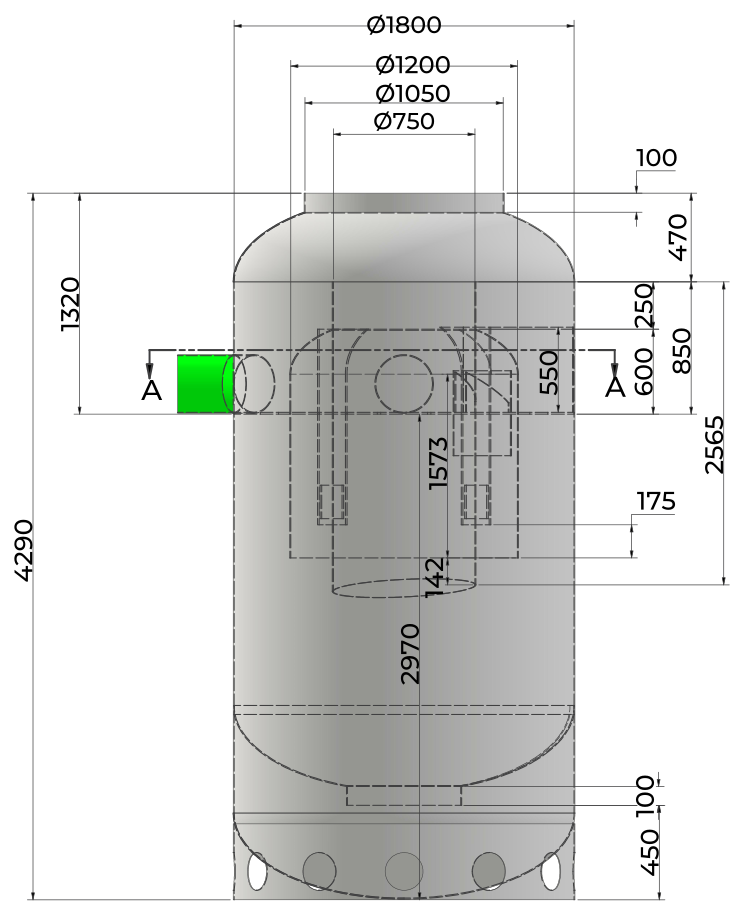
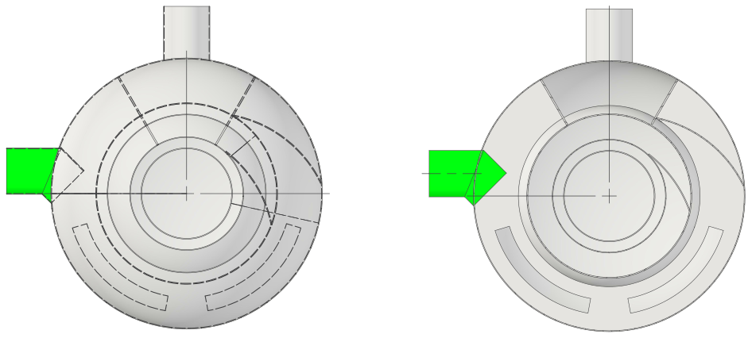
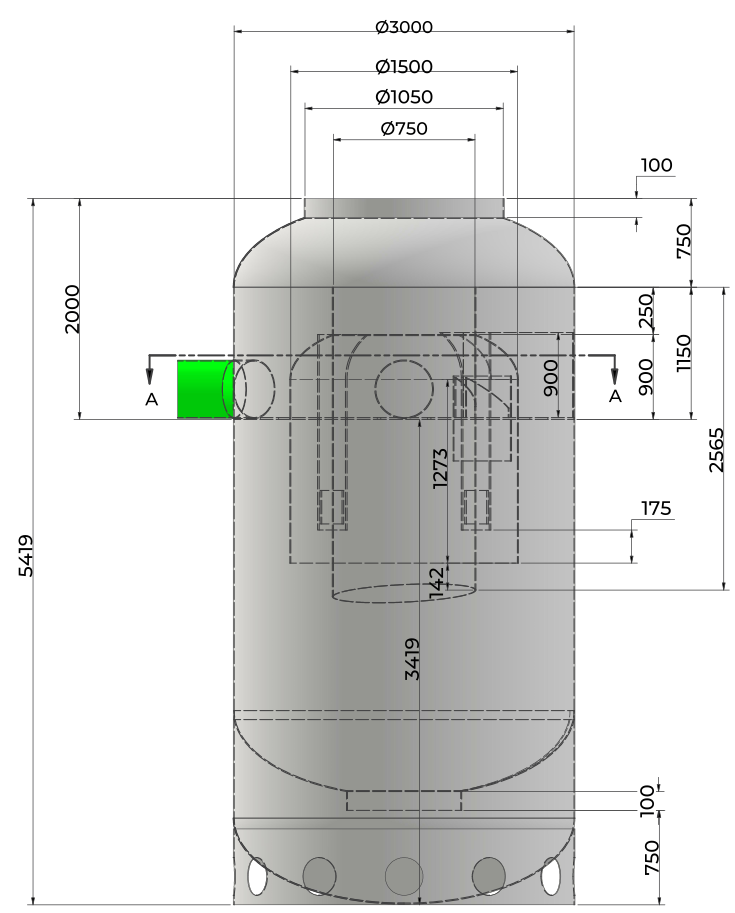
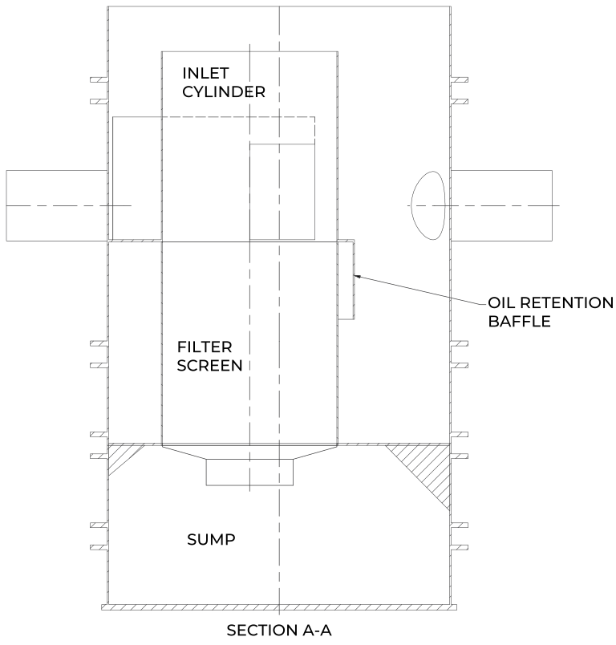
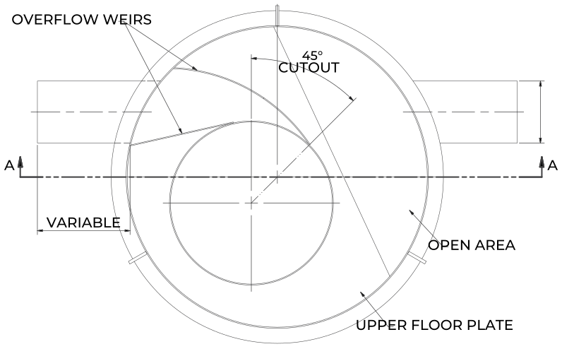
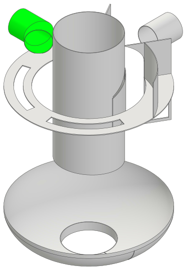
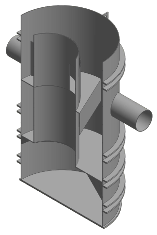

SudSceptor is a hydrodynamic separator of proven and tested performance, sold as SEHDS750 to SEHDS3000. Designed for use within SuDS treatment trains, it gives certainty of water quality treatment and protects downstream controlled waters from sediment-bound pollutants, enabling enhanced amenity and biodiversity downstream.
Units are designed in accordance with the NJDEP protocol, best advice (NJDEP covers TSS only) and the British Water Code of Practice. A SudSceptor can be used on-line or off-line, with or without an external bypass unit.
Performance & hydraulics
SudSceptor removes sediment-bound contaminants and is made in a range of sizes to suit site flows and conditions. It removes over 50% of fine TSS (0 to 200 microns, median size 75 microns) at design flows and up to 99% of coarse solids of 0.1 to 0.4 mm.
Mitigation indices
TSS
Metals
Hydrocarbons
NJDEP*
0.5
-
-
SudSceptor
0.5
0.40
0.40
* NJDEP protocol, with best advice in part as NJDEP covers TSS only; British Water Code of Practice. Extrapolated values follow the British Water How to Guide: Applying the CIRIA SuDS Manual (C753), Simple Index Approach (version 7, section 4.3, 2021). The USA NJDEP has no regulatory role or authority in the UK and Ireland.
Design compliance
NJDEP protocol 2015 and 2020
DIBt
British Water Code of Practice
GRP models to BS 4994:1987, vessels and tanks in reinforced plastics

SEHDS1800 elevation. Dimensions in mm. Not to scale
Features & benefits
Single-piece unit
Cannot air lock
Wide variety of connection options
Inlet deflector plate promotes the cyclic process
Floatable materials and liquids are retained
Settled solids are prevented from remobilising
Uniform flow path via distributed upward flow
Weir ensures optimised flow paths
Easy maintenance
10-year warranty
Chamber options
SEHDS750 and SEHDS1000 units are made from BBA-certificated HDPE twinwall pipe. SEHDS1200, SEHDS1500, SEHDS1800, SEHDS2500 and SEHDS3000 are built in glass reinforced plastic (GRP). The range takes larger pipe connections, suiting sites with higher peak flows, and integrates easily with UK structured-wall drainage systems.
Installation
Installation design should consider traffic loading, ground conditions and variable groundwater levels. If in any doubt consult the scheme designer or engineer. A suitably qualified professional is required to sign off the installation.
Specification
Range
SEHDS750, 1200, 1800, 2500, 3000
Material
GRP from SEHDS1200; HDPE twinwall for SEHDS750
Treatment flow
32 to 259 L/s, by model
Connections
Up to Ø1200 mm inlet and outlet
Head loss
500 to 515 mm maximum
Filter
Optional RhinoPod polishing filter
Warranty
10 years
01 / 04
SudSceptor
General arrangement - SEHDS3000
Plan and section A-A plan | inlet shown green

Elevation

SEHDS3000
Chamber
Ø3000 mm GRP
Overall height
5419 mm
Inlet invert
2000 mm below top
Outlet invert
3419 mm above base
Max pipe
Ø1050 mm inlet and outlet
Sediment storage
4779 litres
Oil / debris storage
5024 litres
Treatment flow
189 L/s
Hydraulic capacity
655 L/s
Max head loss
500 mm
Reading the drawing
Drawing ADV-SEHDS3000 shows the Ø3000 GRP vessel with its Ø1500, Ø1050 and Ø750 internal tubes. The inlet invert is measured down from the top of the unit and the outlet invert up from the base.
Not to scale Reproduced from the SuDS Enviro drawing pack for illustration. Dimensions in millimetres. Confirm project dimensions against the order drawing.
02 / 04
SudSceptor
How it works - separation, retention, polishing
1
Inlet and deflector plate
Stormwater enters the inlet cylinder, where a deflector plate turns the flow and starts the cyclic process. The unit cannot air lock, and the inlet can be connected in a wide variety of positions.
2
Settlement in the sump
As the water circulates, sediment-bound pollutants settle out of the flow into the sump below. The settled solids are prevented from remobilising, so they stay in the sump until it is emptied during maintenance.
3
Floatables and oil retained
Floatable materials and liquids rise and are held back by the oil retention baffle, so they cannot pass to the outlet. The unit stores sediment and oil and debris separately; see the storage figures on page 4.
4
Upward flow and weir
Treated water rises through the filter screen with a distributed upward flow, giving a uniform flow path, and leaves over the overflow weirs, which keep the flow paths optimised.

Section A-A. SudSceptor range drawing. Not to scale
Plan | weirs and floor plate

Internals


Cutaway. SudSceptor range drawing.
Treatment train with RhinoPod
Pollutant
SudSceptor
RhinoPod
Combined
Suspended solids
High
Low
Very high
Hydrocarbons
High
Medium
Very high
Zinc (Zn)
Moderate
High
High
Copper (Cu)
Low
High
High
Phosphate (PO4)
None
High
High
PAHs
None
Medium
High
Relative removal from independent lab and field evaluations in Sweden and across Europe, as published in the SudSceptor and RhinoPod brochure.
Optional RhinoPod
The RhinoPod polishing filter captures a wide range of harmful substances, including oils, polycyclic aromatic hydrocarbons (PAHs), phosphorus, nitrogen and phosphate (PO4).
It is capable of removing the 33 priority substances identified in the EU Water Framework Directive, as well as heavy metals such as cadmium, copper, zinc, nickel, lead and mercury.
03 / 04
SudSceptor
Size range - SEHDS750 to SEHDS3000
SEHDS1800 - Ø1800, 4290 mm highSEHDS2500 - Ø2500, 5290 mm highSEHDS3000 - Ø3000, 5419 mm high
Not to scale Elevations are shown at different scales so each fits the column. The GRP models share one internal arrangement, scaled to each diameter.
Code
Chamber
Overall height
Inlet invert from top
Outlet invert from base
Max pipe
Sediment storage
Oil / debris storage
Treatment flow
Hydraulic capacity
SEHDS750
Ø750 HDPE
Performance and storage data on request
SEHDS1200
Ø1200 GRP
2723 mm
TBC
1914 mm
Ø600
415 L
370 L
32 L/s
426 L/s
SEHDS1800
Ø1800 GRP
4290 mm
1320 mm
2970 mm
Ø600
1027 L
1462 L
73 L/s
222 L/s
SEHDS2500
Ø2500 GRP
5290 mm
1620 mm
3670 mm
Ø1200
3594 L
2332 L
259 L/s
426 L/s
SEHDS3000
Ø3000 GRP
5419 mm
2000 mm
3419 mm
Ø1050
4779 L
5024 L
189 L/s
655 L/s
Figures from the SEHDS1200, SEHDS1800, SEHDS2500 and SEHDS3000 data sheets. Overall height and inlet invert on the SEHDS2500 are standard and can vary. Maximum head loss is 500 mm (515 mm on the SEHDS2500).
Installation
Bed and surround to suit the traffic loading and ground conditions
Allow for variable groundwater levels and flotation
Set inlet and outlet to the design inverts
Use on-line or off-line, with or without an external bypass
Have the installation signed off by a suitably qualified professional
Compliance
NJDEP protocol 2015 and 2020
DIBt
British Water Code of Practice
CIRIA C753 Simple Index Approach
GRP to BS 4994:1987
Specify SudSceptor
Send us the treatment flow, pipe sizes and invert levels and our team will select the model for your site.